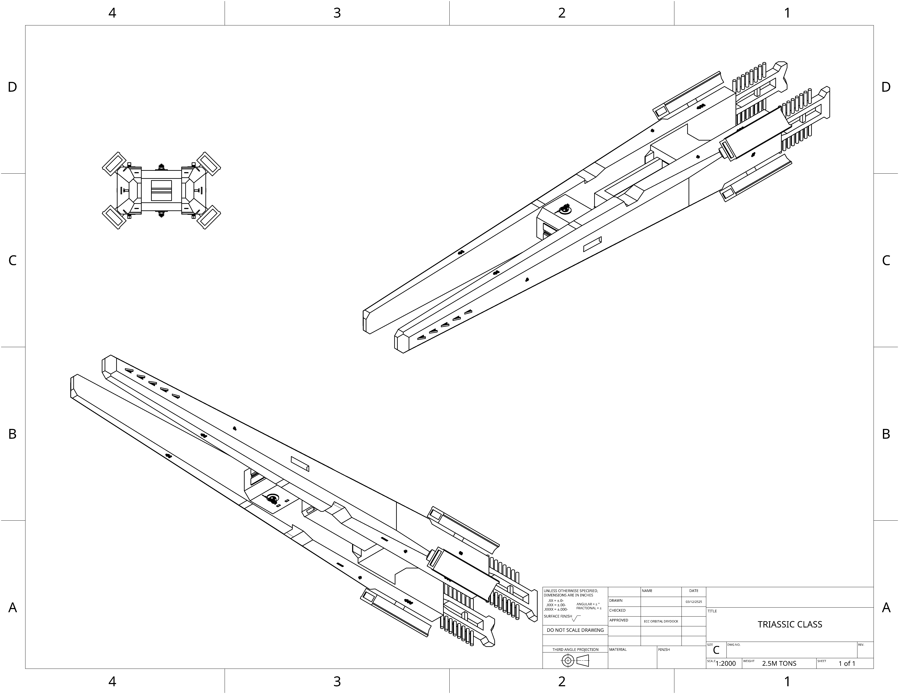

home
ECC Triassic light carrier:
Well rounded drone carrier, once used for policing planetary systems by use of its massive interdictor
assembly that its hull is built around, now fitted with extra point defense laser emplacements and two
RAVEN turrets for anything heavy enough to survive its initial point defense onslaught. Carries large
magazine size for its two rapid cycling lateral missile launch tubes.

- Main armament:ECC Strike craft
- Secondary armerment:X2 ECC RAVEN emplacement
- Secondary armerment:ECC HESC missiles
- Point defense complement:x4 ECC PDL
- Shielding capabilities: 300 TerraJoules
- Sensor complement: R700 internal array
- In Atmosphere Acceleration(G): x1.8 Forward x1.8 Back
- Heat dissipation rate: X2.1 GiggaWatt
- Tonnage: 2.5M Metric tons